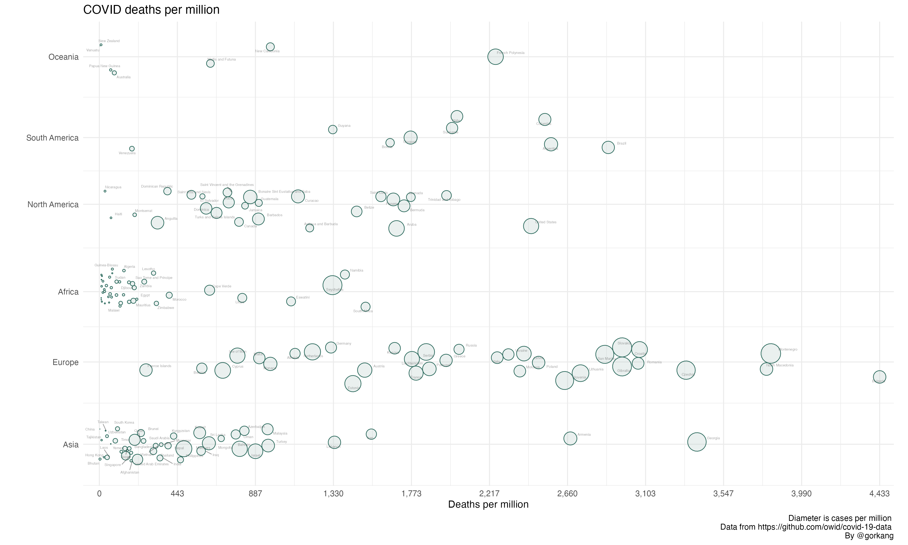

# Load libraries
library(readr)
suppressPackageStartupMessages(library(dplyr))
library(linearpackcircles)
# Data
DF = read_csv("https://raw.githubusercontent.com/owid/covid-19-data/master/public/data/owid-covid-data.csv", show_col_types = FALSE) %>%
filter(date == max(date)) # Keep only most recent data
# Plot
linearpackcircles(DF,
# Main variables
ID_var = "location",
group_var = "continent",
area_var = "total_cases_per_million",
x_var = "total_deaths_per_million",
# Layout parameters
separation_factor = 15,
ratio_reduction_area = 60000,
ratio_reduction_x = 50,
height_y = 5,
# Text labels
max_overlaps = 8,
# Plot parameters
title = "COVID deaths per million",
x = "Deaths per million",
caption = "Diameter is cases per million \n
Data from https://github.com/owid/covid-19-data \n
By @gorkang",
size_text = 3)
#> - 22 iterations performed
#> - 18 iterations performed
#> - 5 iterations performed
#> - 1 iterations performed
#> - 0 iterations performed
#> - 0 iterations performed
#> Warning: ggrepel: 99 unlabeled data points (too many overlaps). Consider
#> increasing max.overlaps